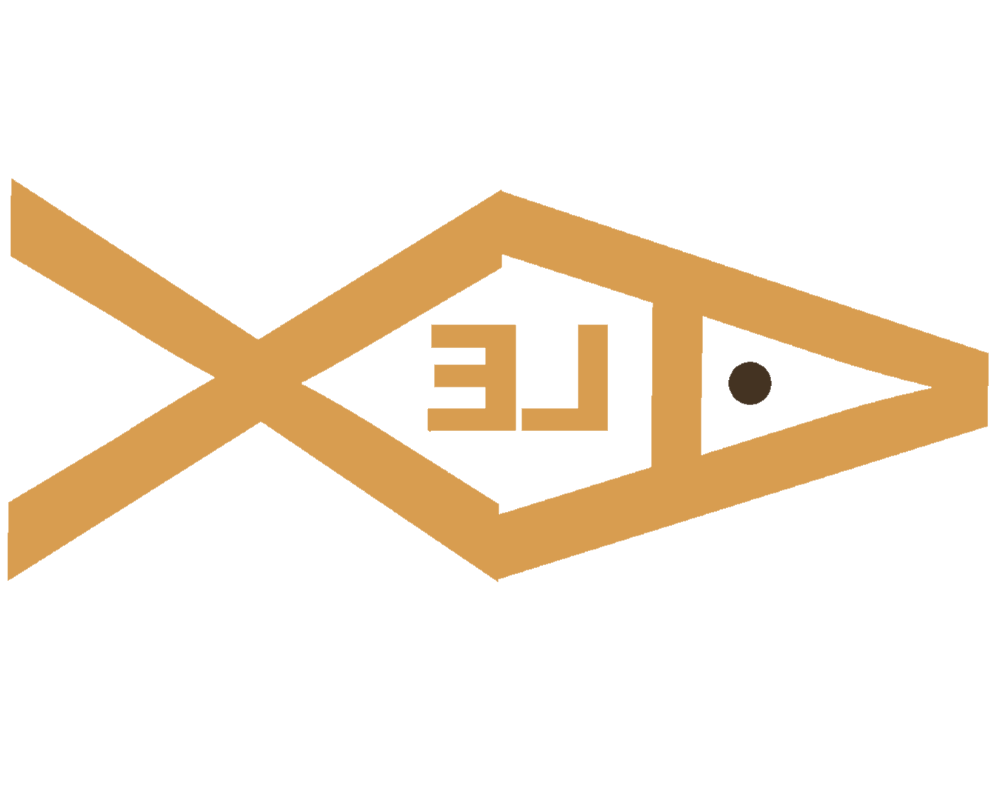

Projekty
Ukážka niektorých mojich najlepších projektov a prác, ktoré som vytvorila v škole na hodinách odbrných predmetov.

Ukážka niektorých mojich najlepších projektov a prác, ktoré som vytvorila v škole na hodinách odbrných predmetov.

Reinterpretácia diela ,,Žena s parazolom” od známeho umelca Claude Moneta. Program: Adobe Photoshop.

Upravená fotografia s rôznymi druhmi vektorizácie a koláže s ďalšími obrázkami predstavujúca ,,budúcnosť”. Program: Adobe Illustrator

Monochromatická vektorizovaná úprava fotografie známeho umelca Andyho Warhola. Program: Adobe Illustrator

Druhá farebná verzia fotografie Andyho Warhola upravená s viacerými filtrami. Program: Adobe Illustrator.

Reinterpretácia diela doupraveného prvkami a nápadmi z vlastnej fantázie, pomocou štetcov. Program: Adobe Illustrator.

Kresba perspektívy novodobého fiktívneho mesta s výraznými farbami. Program: Adobe Illustrator

Kresba ježibaby podľa zadania z hodiny pomocou štetcami. Program: Adobe Illustrator
Návrh na logo fiktívnej kaviarne vo svetlo-farebnej verzii. Program: Canva